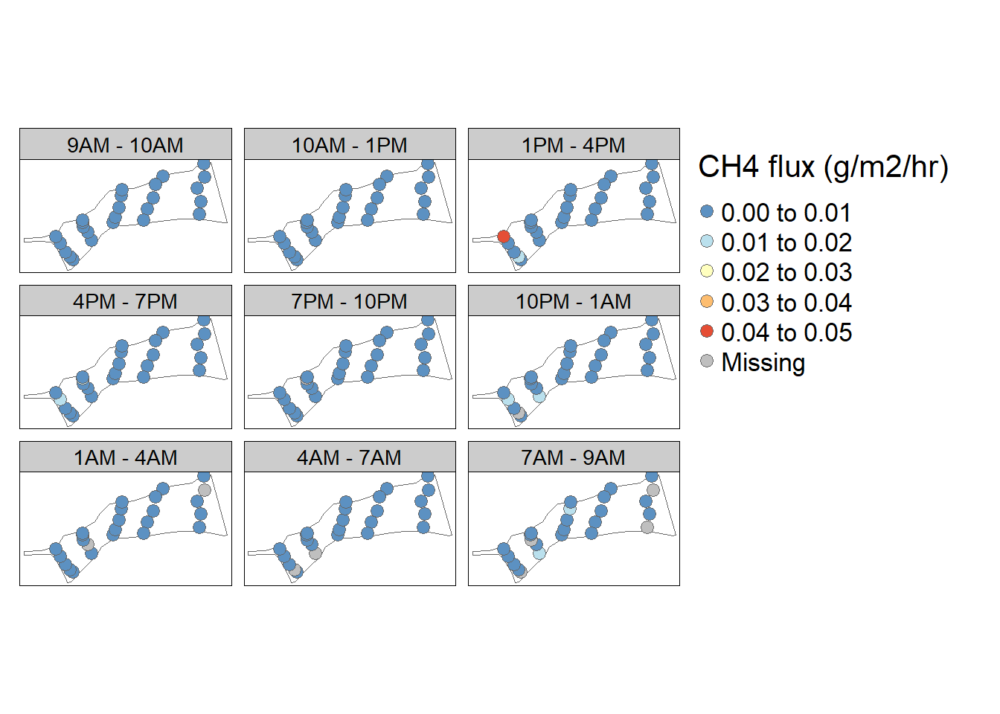

Chapter 6 Ordinary kriging just in space
library(sf)
library(mapview)
library(stars)
library(gstat)
library(automap)
library(tidyverse)
library(sp)
set.seed(11)
# how many moles of gas were in that volume
# create fake data
n_pts <- 15
conc <- rbeta(5, 2, 1)*100*10000 # conc in ppm
area = 0.0254469
time = 3
pts <-
data.frame(
vol = rgamma(n_pts,1),
lat = rnorm(n_pts, 0, 1),
long = rnorm(n_pts, 0, 1)) %>%
mutate(conc_sampled = sample(conc, n_pts, replace = TRUE), # random sampling of conc vector
flux = vol * (1/area) * (1/time)* (1/10^9) * conc_sampled * 16.04 * (1/0.0821)* (1/293.15)) %>%
st_as_sf(coords = c("long", "lat"), crs = 4326)
mapview(st_bbox(pts)) + mapview(pts, zcol = "flux")grid <- st_as_stars(st_bbox(pts), dx = 0.1, dy = 0.1)
# calculate empirical variogram
v_emp_ok <- variogram(flux ~ 1, pts)
plot(v_emp_ok)
# auto fitting of variogram
v_mod_ok = autofitVariogram(flux ~ 1, as(pts, "Spatial"))
plot(v_mod_ok)v_mod_ok$var_model## model psill range
## 1 Nug 3.694563e-06 0.00000
## 2 Sph 8.695035e-06 33.14612plot(v_emp_ok, v_mod_ok$var_model)# manual fitting of variogram
test_var <- fit.variogram(v_emp_ok, vgm("Sph"))## Warning in fit.variogram(v_emp_ok, vgm("Sph")): linear model has singular covariance
## matrix## Warning in fit.variogram(v_emp_ok, vgm("Sph")): singular model in variogram fit## [1] "a possible solution MIGHT be to scale semivariances and/or distances"plot(v_emp_ok, test_var)
# use variogram for kriging interpolation
g <- gstat(formula = flux ~ 1, model = test_var, data = pts)
z <- predict(g, grid)## [using ordinary kriging]z <- z["var1.pred",,]
names(z) = "flux"
# plot interpolated data
b <- seq(range(z$flux)[1], range(z$flux)[2], by = (range(z$flux)[2]-range(z$flux)[1])/10)
plot(z, breaks = b, col = hcl.colors(length(b)-1, "Spectral"), reset = FALSE)
plot(st_geometry(pts), pch = 16, add = TRUE)
contour(z, breaks = b, add = TRUE)# leave-one-out cross validation
out <- krige.cv(flux ~ 1, pts, v_mod_ok$var_model, nmax = 10, nfold = nrow(pts))##
|
| | 0%
|
|====== | 7%
|
|=========== | 14%
|
|================= | 21%
|
|======================= | 29%
|
|============================ | 36%
|
|================================== | 43%
|
|======================================== | 50%
|
|============================================= | 57%
|
|=================================================== | 64%
|
|======================================================== | 71%
|
|============================================================== | 79%
|
|==================================================================== | 86%
|
|========================================================================= | 93%
|
|===============================================================================| 100%sqrt(mean(out$residual^2))## [1] 0.003145635out2 <- krige.cv(flux ~ 1, pts, test_var, nmax = 10, nfold = nrow(pts))##
|
| | 0%
|
|====== | 7%
|
|=========== | 14%
|
|================= | 21%
|
|======================= | 29%
|
|============================ | 36%
|
|================================== | 43%
|
|======================================== | 50%
|
|============================================= | 57%
|
|=================================================== | 64%
|
|======================================================== | 71%
|
|============================================================== | 79%
|
|==================================================================== | 86%
|
|========================================================================= | 93%
|
|===============================================================================| 100%sqrt(mean(out2$residual^2))## [1] 0.003145991# Look at NEON suggested sampling time # plot(v_emp_ok)
#
# test_var <- fit.variogram(v_emp_ok, vgm(psill = 1e-5, "Ste"))
# test_var_2 <- fit.variogram(v_emp_ok, vgm("Ste"))
# test_var_3 <- fit.variogram(v_emp_ok, vgm(psill = 1e-5, "Ste", nugget = 1e-7))
# auto_var <- fit.variogram(v_emp_ok, vgm(psill = 1.195905e-05, "Ste", range = 89.90412, kappa = 10))
# test_var_4 <- fit.variogram(v_emp_ok, vgm(psill = 1.25e-5, "Exp"))
#
# str(pts)
# test_var_4
# pts_sdf <- as_Spatial(pts)
#
# pts_flat <- st_drop_geometry(pts)
# class(st_coordinates(pts))
# pts_flat$x <- st_coordinates(pts)[,1]
# pts_flat$y <- st_coordinates(pts)[,2]
#
# test_var_gls <- fit.variogram.gls(flux~1,pts_sdf, model = vgm(1.191844e-05, "Sph", 45), maxiter = 20, plot = F)
#
# summary(test_var_gls)
#
# fit.variogram.reml(log(zinc)~1, ~x+y, meuse, model = vgm(1, "Sph", 900,1))
#
# class(pts)
#
# plot(v_emp_ok, test_var)
# plot(v_emp_ok, test_var_2)
# plot(v_emp_ok, test_var_3)
# plot(v_emp_ok, auto_var)
# plot(v_emp_ok, test_var_4)
# plot(v_emp_ok, test_var_gls)
#
#
# # residual sum of squares
# test_var_fit <- variogramLine(test_var, maxdist = max(v_emp_ok$dist), dist_vector = v_emp_ok$dist)
# residual = test_var_fit$gamma - v_emp_ok$gamma
# sqrt(mean(residual^2))
#
# test_var_fit_2 <- variogramLine(test_var_2, maxdist = max(v_emp_ok$dist), dist_vector = v_emp_ok$dist)
# residual_2 = test_var_fit_2$gamma - v_emp_ok$gamma
# sqrt(mean(residual_2^2))